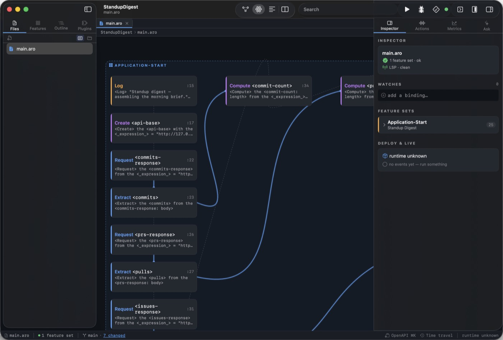
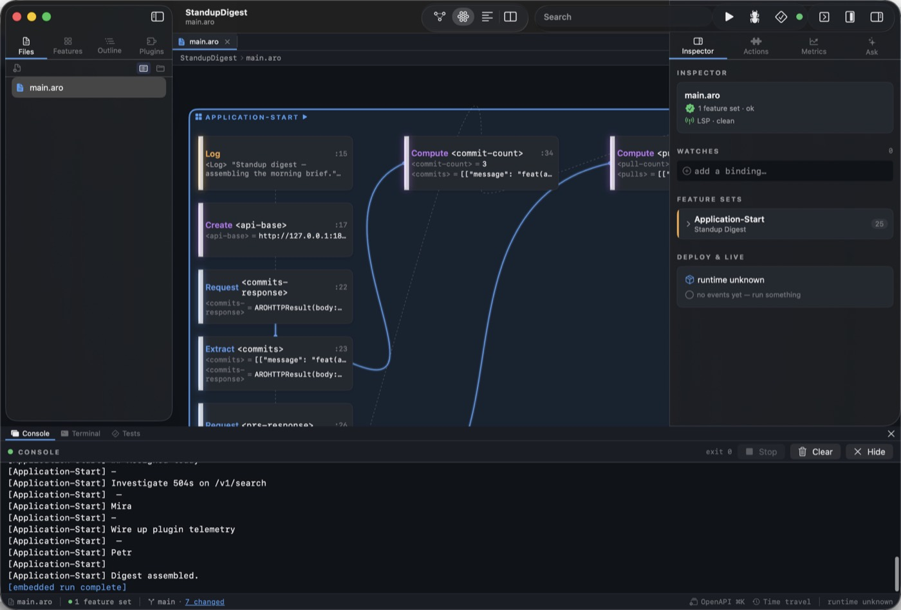
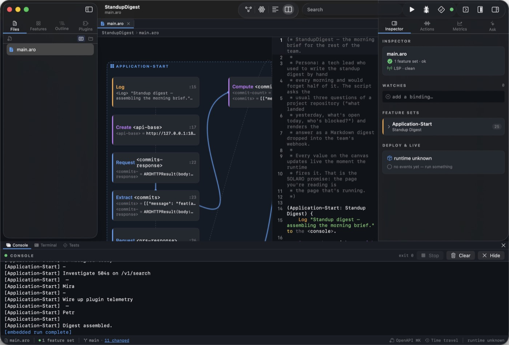
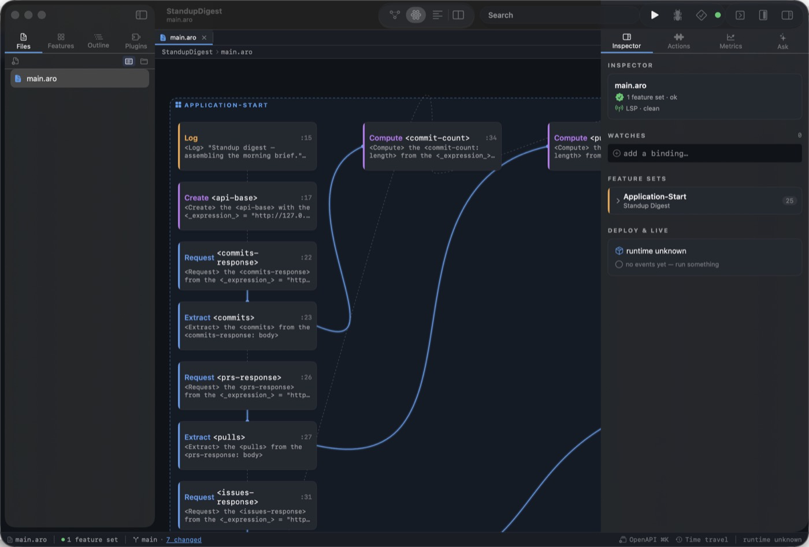
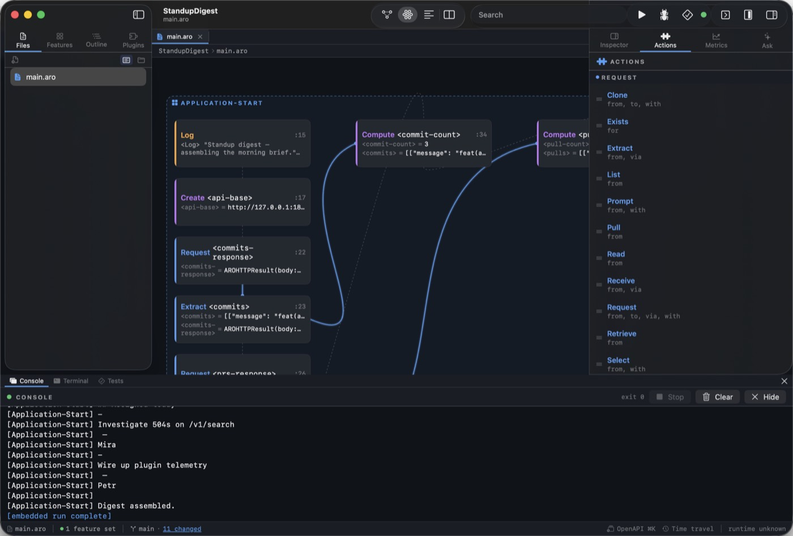
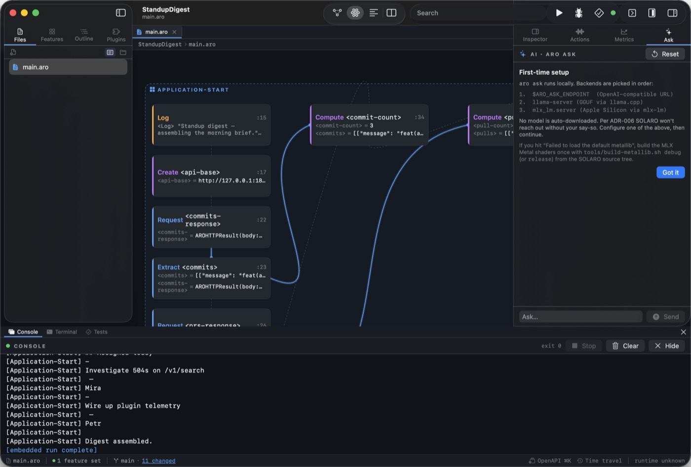
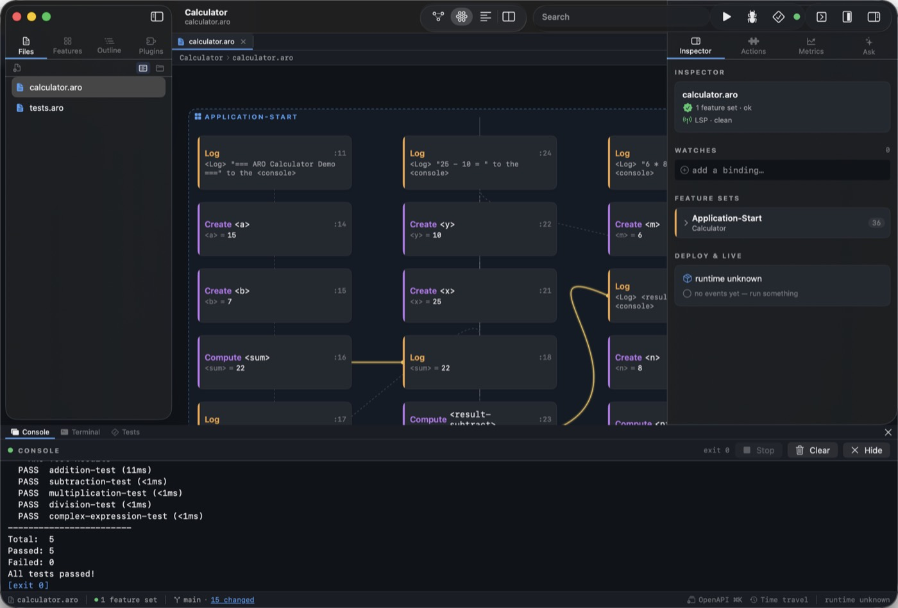

Most editors call themselves “integrated” because a debugger, a terminal and a file tree share one window. Solaro takes the word literally: the canvas that draws your feature sets is the canvas that lights up as the runtime fires them. The page you are reading is the page that is running.
The canvas
Your program, drawn
Every feature set is a container. Every statement inside it is a node. Every
<variable> produced by one statement and consumed by another is an
edge. The layout engine arranges the flow left to right, top to bottom — so the
shape of the program is something you look at, not something you reconstruct in your head.
Pan with two fingers, pinch to zoom, double-click a node to jump to its source line,
drag anything anywhere. Your positions persist in a .layout.json beside the
file, so the picture survives a git pull. Open an openapi.yaml
and the canvas shows the route and schema graph instead.

Feature sets as containers, statements as nodes, data flow as edges.
Live execution
The program is the trace
Hit Run and the canvas pulses. Each statement node lights up as the
runtime fires it, and the value it bound appears underneath — the runtime's own
binding, not a re-execution by the editor. No print-tracing, no
console.log archaeology.
This works because the runtime emits one JSON event per statement fired, and Solaro watches that stream. It never pauses your program to ask it questions; it is watching, not interrogating. The consequence at the human level: when something goes wrong you see where before you see what. A node that stays dark is a branch that never fired. A node holding the wrong value is a bug whose location you already know.

After the run: every node carries the value it produced. <commit-count> = 3.
Canvas and code
Two views, one file
The pane picker swaps the centre between map, canvas, text and split. In split mode the canvas and the editor sit side by side and stay in step: edits in the code panel reach the canvas as soon as the source parses, and canvas-driven changes write straight back into the file. There is no Save button in the loop.
Syntax highlighting comes from the same lexer the runtime uses, so a token coloured as a verb in the editor is a verb to the parser. Breakpoints toggle with a click in the gutter.

Split mode. Drag the divider to give either side more room.
The inspector
Edit the statement you selected
Select a node and the inspector's Selected Statement card lets you edit it inline — the runtime reparses on every keystroke and reflows the canvas. Select a repository node and you get its rows as a live table instead. Pin values you care about under Watches; read diagnostics under Problems.
Those diagnostics come from aro lsp — the same language server VS Code
and IntelliJ talk to. A problem the inspector shows is a problem your teammate's editor shows.

The inspector is a stack of cards that follows your selection.
Actions & snippets
Drag a verb onto the canvas
The Actions tab lists every action the runtime can dispatch, grouped by semantic role — REQUEST, OWN, RESPONSE, EXPORT, SERVICE — with built-ins separated from each loaded plugin's contributions. Every row is a drag source: drop one on a feature-set container and Solaro inserts the statement for you.
Snippets sits next to it on purpose. Actions drags one statement; Snippets
drags the pattern around it — a feature-set skeleton, a for each with a
filter, an event handler and its emitter.

Built-ins and plugin actions, grouped by role, draggable onto the canvas.
Metrics
What ran, how often, how long
The Metrics tab is a live, Prometheus-style snapshot of the runtime's counters while your project runs. Every feature set the runtime has dispatched gets a row: how many times it was entered this session, and the mean wall-clock time spent inside it, awaited futures included.
Ask
A co-pilot that runs on your machine
Switch the right rail to Ask for an assistant backed by
aro ask. It can explain a feature set, propose a diff you can apply with one
click, or offer to run a command and wait for your approval.
It is local-first by default: MLX on Apple Silicon, llama-server elsewhere, or
an OpenAI-compatible endpoint if you configure one. It can see your project's source, the
LSP diagnostics, and the current run's event stream. Nothing else. No telemetry, and no
cloud upload of your source.

The first-run card names the backends it will try, in order, before anything is sent.
Tests
Results where the code is
aro test collects every feature set whose business activity ends in
Test or Tests, runs them in isolation, and Solaro shows the outcome in
three places at once: a pill on the feature set's header in the canvas, coloured markers in
the editor gutter, and the pass/fail list in the Tests tab. A failure pins the offending
statement, so the click from red to cause is a single one.

Five tests, five passes, with the canvas still showing the statements that ran.
Notebooks
A REPL that keeps its output
Open a .repl file and the centre pane becomes a notebook: markdown cells and
ARO code cells, each keeping the output it produced. The keyboard chords are Jupyter's
— ⇧⏎ to run and move on, ⌥⏎ to run and
insert, Esc for command mode.
Cells run against aro repl --json, the same protocol and session engine the
native Jupyter kernel speaks — so a cell behaves identically in Solaro and in
JupyterLab. The file on disk is JSON with ARO's display bundle as first-class fields, so a
notebook diffs like source rather than like a minified blob.

Prototype a stage against real data, then move the statements into a .aro file unchanged.
And the rest of the window
Step through meaning
Breakpoints live in the file's sidecar, so they survive a restart and travel with the project. Each step is a complete Action-Result-Object — a unit of work, not an arbitrary lexical line.
Time travel
Record a run and scrub through it frame by frame in the time-travel sheet, watching values arrive on the canvas in the order the runtime produced them.
A real terminal
The bottom pane carries the console (the run's stdout and stderr), a shell rooted at your project, and the test results — behind three tabs.
Repository & event overlays
An Observer feature set shows its repository's row count and last-touched
row inline on the canvas. Emit and its handlers do the same for events.
Plugins in-window
Install plugins from a Git URL or the in-app list. Their actions and qualifiers show up in the Actions panel alongside the built-ins.
The books, built in
Help → Books downloads the PDFs of every book in the project on demand — including the full Solaro platform book.
Get Solaro
Solaro ships with the ARO release for Apple Silicon Macs. Download the disk image, drag
it into /Applications, and launch — it is signed and notarized.
It drives the aro CLI for run, debug, test and build, so install the
matching CLI too:
brew install arolang/tap/aro
Prefer to build it yourself? swift build -c release --product SolaroApp
from a checkout of the repository. Solaro probes for a version mismatch at launch and
tells you if the CLI on your path disagrees with the app.